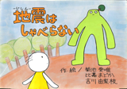

茨城大学紙芝居研究会 紙芝居アーカイブ
このサイトでは、茨城大学紙芝居研究会が、これまで制作してきた紙芝居を公開しています。
実演時の動画（データがあるもののみ）、画・脚本、作品のPDFデータを掲載しています。
動画を見、あるいは画・脚本を見て興味をもたれた方は、PDFデータをダウンロードして印刷し、厚紙などに貼り付けて、ご自身で演じてみてください。
平絵紙芝居
- 2014
-
CO-OPさいくべ
野菜作りも一段落し、おじさんはたまったペットボトルをCO-OPへ持って行きました。ところが、ペットボトルが突然しゃべりだし……
- 2013
-
あっちゃんとぼく
（台本が紛失しています）
-
ともだち
クラス一大きな“でくのぼう”は、いつもたいしょう君にいじめられていた。ある遠足の日、たいしょう君は古くなっていた橋から落ちてしまった！
- 2012
-
のらさいくべ
東京での生活に失敗したオッサン。故郷茨城に戻って農業を始めるのだが、ここでもまた失敗。そこに現れたのは……
-
ひかえおろ
こうめとなつとは、あの有名なおじいちゃんにかわって、茨城県の悪人を成敗することになった！
- 2011
-
さんびきのおおかみ
あの有名な物語に登場する三匹の狼は、じつは...
- 
地震はしゃべらない
街のはずれに住んでいる地震がある日くしゃみをした...
-
天狗のこども
ある日、天狗は川で子どもを釣り上げてしまう。子どもと暮らし始めた天狗だったが……
-
ボクトロボット
男の子とロボットは大の仲良し。ロボットはいつでも男の子を助けてくれる。でも……
- 2010
-
チューリンガーの逆襲
一度はイバダイガーに敗れたチューリンガー。しかし、諦めてはいなかった。
-
どんちゃん どこいくの？
臭くて汚いうんちのどんちゃんは、水のしーちゃんと一緒に旅をする。旅の果てに待つものは……
-
橋谷物語（前編）
愛牛ジョセフィーヌを食われた橋谷は、魔王・学長にトライデントと共に反旗を翻す。茨城大学の秘められた伝説が今語られる！（前編）
-
橋谷物語（後編）
愛牛ジョセフィーヌを食われた橋谷は、魔王・学長にトライデントと共に反旗を翻す。茨城大学の秘められた伝説が今語られる！（後編）
-
ぶったたきとはんごろし
旅人を泊めてくれた親切な老夫婦。けれども二人は旅人の居ないところで「ぶったたきにするか半殺しにするか」と相談を始めた……
- 2009
-
ポイすてだいちゃん
海にジュースの空き缶をポイすてしただいちゃんは、魔法使いのおばさんに、魚に変えられてしまいました...
- 制作年不詳
-
うらしまたろう
助けた亀に連れられて龍宮城に行くはずの浦島太郎が、海岸で困っています。一体何があったのでしょう？
-
ぎゅうにゅうこぞう
けんたが外から帰ってくると、机の上にはみなれない牛乳パック。突然、その牛乳パックがしゃべりだした……”
-
へるしーせんたいからだにいいんじゃー
お菓子大好きな男の子ゆたちゃんは、お菓子ばかり食べているうちにおなかがどんどん大きくなってしまいます。ゆたちゃんは一体どうなってしまうのでしょう……
-
みっちゃんとふしぎなおまつり
お祭りでおかあさんとはぐれてしまったみっちゃん。泣いているみっちゃんに声をかけたのはきつねのおばけでした……
about
茨城大学紙芝居研究会について
茨城大学紙芝居研究会は、2004年8月に群馬県立土屋文明記念文学館において自作の「立絵紙芝居」の上演を行うために茨城大学学生有志によって結成された研究会でした。その後も、自作の立絵紙芝居の実演を中心に活動をしてきています。
結成当初の活動は、国内で唯一の紙芝居の網羅的年表である石山幸弘著『紙芝居文化史』（萌文書林, 2008）の中で「27日〜29日、「茨城大学教育学部紙芝居研究会」（代表渡辺まどか）の学生ら、群馬県立土屋文明記念文学館にて共同製作の「立絵」を実演し、話題を呼ぶ。」（2004年8月）、「茨城大学教育学部紙芝居研究会（代表渡辺まどか）の学生、群馬県立土屋文明記念館にて立絵の復活を目指し、創作立絵を実演。好評。以後、同館のボランティアグループなどに立絵の制作・実演の輪が広がる。」（2005年8月）、「13日、茨城大学教育学部の紙芝居研究会代表渡辺まどか、会員細谷靖彦・花香麻衣子・鈴木一美ら、水戸市立新原保育所にて自作の立絵紙芝居を実演。園児ら120人が観覧。」「14日茨城新聞「吐玉泉」欄にて、茨城大学紙芝居研究会の学生が、水戸市立新原保育所にて、桃太郎のオリジナル立絵紙芝居の実演を行った旨報道。また、他日、水戸市千波湖畔にても定期的に実演活動を行うとも。」（2005年9月）、「茨城大学教育学部紙芝居研究会（代表武田春奈）の学生ら、土屋文明記念館にて立絵の復活を目指し、創作立絵を実演。好評。」（2006年8月）、「茨城大学教育学部紙芝居研究会（代表武田春奈）の学生ら、群馬県邑楽町立図書館にて創作立絵を実演。」（2007年3月）と紹介されています。
また、2013年には、水戸市の夏の平和イベント「ぴ〜すプロジェクト」に、水戸空襲に題をとった『ある紙芝居屋の物語〜それでも、黄金バットはやってくる〜』で参加、地元の新聞、ラジオなどで取り上げられました。水戸市博物館、平和記念館、水戸市立図書館等で上演したこの作品は、その後、阿見町の予科練記念館や友部の筑波海軍航空隊記念館でも上演させていただきました。『ある紙芝居屋の物語』は、全117場面、実演時間40分強の平絵紙芝居ですが、主人公のひとり、太郎少年は土浦海軍航空隊に入隊する設定であり、予科練記念館や海軍航空隊記念館での実演は、「紙芝居の里帰り」ともいうべきものでその機縁に思いを新たにしました。
2014年には、『ある紙芝居屋の物語』をきっかけに、水戸市在住の被爆者である茂木貞夫さんからの被爆体験のききとりをもとに『茂木貞夫物語』を制作、この作品の制作にあたっては、地元NHKが制作中から取材してくださり、2015年2月19日の「ニュースワイド茨城」で特集として放送していただきました。
被爆体験の紙芝居は、現在もう一本、栃木在住の高橋久子さんからのききとりによる平絵紙芝居を制作中です。
2013年の「ぴ〜すプロジェクト」以降、「岡倉天心」「黒澤止幾子」「茂木貞夫」と、平絵紙芝居の制作が続いている紙芝居研究会ですが、会の活動の柱のひとつは、平絵紙芝居以前の紙芝居の形態であり、現在では既に廃れてしまった「立絵紙芝居」の制作と実演です。2015年は久しぶりに立絵紙芝居の新作の制作に手を付け始めました。やはり、地元茨城に伝わる話に題をとった作品です。
また、結成当初からの保育所でのお話の会や大学近くの鑑別所での紙芝居実演、千波湖での「ちびっこ広場」、霞ヶ浦での水質保全イベントなど、定期的な実演も行なっています。
茨城大学紙芝居研究会は、茨城大学学生と研究会OG・OBを中心に活動しています。活動の様子については、FACEBOOKページに時折掲載していますので、御覧ください。
また、会へのお問い合わせなどは、FACEBOOKページのメッセージか、顧問の林延哉（茨城大学教育学部准教授）までメール hayashi.nobuya@gmail.com にてご連絡ください。
郵送の場合は、次の住所にお願いします。
310-8512 茨城県水戸市文京2-1-1 茨城大学教育学部立絵紙芝居について
茨城大学紙芝居研究会の活動の柱のひとつは、立絵紙芝居の復興です。
現在、紙芝居といえば、絵の書かれた四角い紙の束を使って、順番に絵を見せて物語を語る、平絵紙芝居を思い浮かべる人がほとんどのはずです。
この平絵紙芝居のスタイルが生まれたのは、1930年（昭和5年）、東京でのことです（蟻友会制作『魔法の御殿』 脚本／後藤時蔵・画／永松武雄）。それ以前、紙芝居といえば、それは、立絵紙芝居でした。
立絵紙芝居は、竹串を挟んで絵を書いた二枚の紙を貼りあわせて人形を作り、それを舞台の中で操作して芝居を演じるものです。「紙人形によるお芝居」、すなわち「紙芝居」です。始まったのは明治時代ですが、昭和の頃には、舞台を担いで街頭に出、芝居を見せて飴を売るという、のちの平絵の街頭紙芝居と同様の商売をしていました（もともと、これが街頭紙芝居なので、当然のことですが）。
けれども、平絵紙芝居に比べて操作が難しく、修得するのに時間がかかったため、平絵紙芝居の登場とともに、あっというまに平絵紙芝居に席巻されてしまい、立絵紙芝居は廃れてしまい、誰も演じることはなくなってしまいました。
ちなみに、その形態からペープサートとの類似を言われることが時折ありますが、似ているのは当然で、ペープサートはもともと、立絵紙芝居を参考にして考案されたものです。ペープサートでは、舞台の使用や人形の大きさなどに関して自由度が高くなっていますが、茨城大学紙芝居研究会では、本来の立絵のスタイルを意識して、背景が黒の舞台を使用しています。立絵はもともと、「写し絵」がその出自で、写し絵は黒い画面に人形が浮かび上がるものですので、立絵である限り、背景の黒は譲れないものと考えているからです。